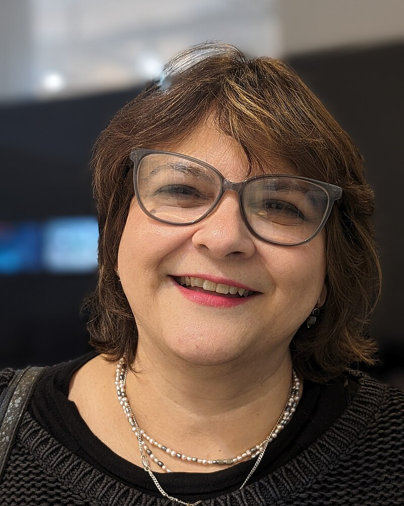

<!DOCTYPE html>
<html lang="en">

<head>
    <meta charset="UTF-8">
    <meta name="viewport" content="width=device-width, initial-scale=1.0">
    <title>TP1 - HTML</title>
</head>

</html>

<body>
    <h1>Kira Kariakin</h1>
    <table>
        <tr>
            <td>
                <header>
                    <p><strong>Kira Kariakin Ramírez</strong>(Caracas,<strong>27 de abril de 1966)</strong>,conocida
                        como <strong>Kira Kariakin</strong>, es <a href="#">comunicadora social</a>graduada de la
                        Universidad Central de Venezuela en el año 1992.<a href="#">Tiene una extensa experiencia en el
                            medio editorial venezolano, habiendo trabajado para Alfa, Planeta, Grijalbo entre los años
                            1988 y 1992. Asimismo, fue gerente general de la revista Estilo entre 1994 y 1998.</a>.</p>
                </header>
                <p>En 1999 se fue de Venezuela y vivió 10 años en Uganda y Bangladesh, regresó en 2008 y luego se fue de
                    nuevo en 2010-2012 a Indonesia.</p>
                <h2> Obra publicada </h2>
                <p>
                    Diversos poemas suyos aparecen en antologías en español, alemán, francés, inglés y ruso, así como en distintas publicaciones digitales. 
                </p>
            </td>
            <td>
                <h3>Kira Kariakin</h3>
                
                <p>Kira Kariakin 12 de octubre de 2020.</p>
            </td>
        </tr>
    </table>
</body>

</html>